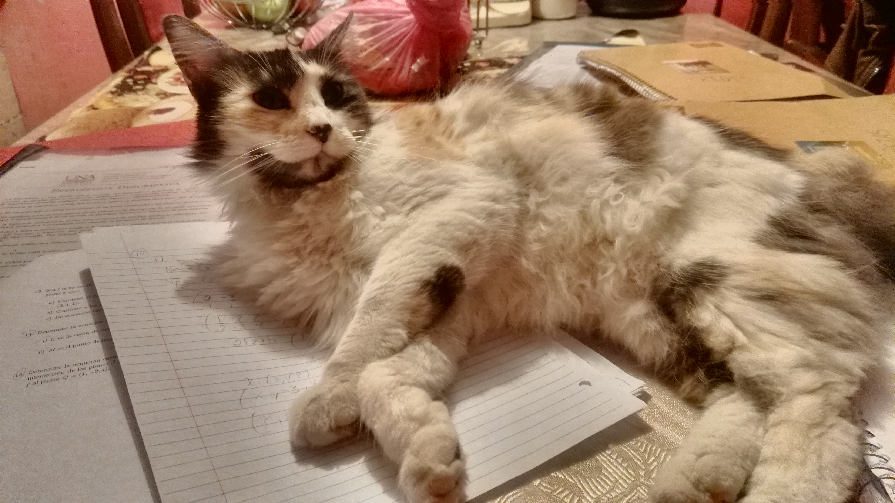

About Samy!

This is samy my little and naughty kitty.
She was adopt 4 years ago since she was a little baby cat.
One night Samy follow my old sister until my house,
she was sorprised because samy obey her when she call her through she looks so afraid to saw extrange people for her.
Samy represents a bless sends by God because my family was suffered a critical situation and samy came to my home for thieve a lot of laughs in all my family members.
I can´t imagine what I will feel when samy is gone forever? but I know that always I still remember her for all the funny moments that we have.
And finaly I want to share to the people some photographies about her that for me represents some real significants with her in my life.
Samy is not a simple pet or a normal pet, she is a family member, she is the grandchild for my parents that doesn´t have yet.
Definitely she is a little naugthy angel for my family.
Samy´s galery
×